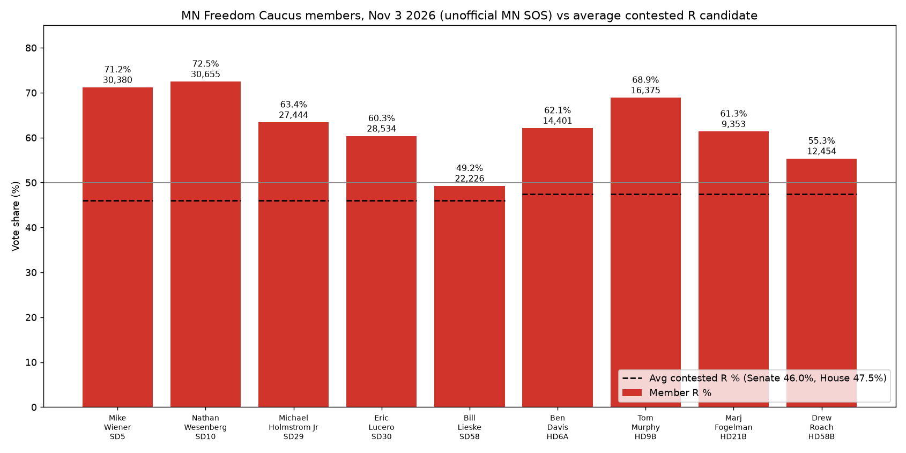

November 3, 2026 general election, unofficial results from the MN Secretary of State. Each member's votes, vote share, margin and district turnout are compared with the average Republican candidate in a contested race in the same chamber. The Senate average covers 63 candidates: 19,344 votes and 45.98%. The House average covers 117 candidates: 9,982 votes and 47.46%. Districts with no Republican on the ballot are left out of both averages.

| Member | District | Votes | Vote % | Opponent | Margin | District total | vs avg R (votes) | vs avg R (%) | Result |
|---|---|---|---|---|---|---|---|---|---|
| Rep. Mike Wiener (ran for SD5) | SD5 | 30,380 | 71.19% | Skylar Fynboh (DFL): 12,197 | +18,183 (+42.61 pts) | 42,676 | +11,036 | +25.21 pts | Won |
| Sen. Nathan Wesenberg | SD10 | 30,655 | 72.46% | Tara Killen (DFL): 11,593 | +19,062 (+45.06 pts) | 42,307 | +11,311 | +26.48 pts | Won |
| Sen. Michael Holmstrom Jr | SD29 | 27,444 | 63.38% | Louis McNutt (DFL): 15,836 | +11,608 (+26.81 pts) | 43,304 | +8,100 | +17.40 pts | Won |
| Sen. Eric Lucero | SD30 | 28,534 | 60.33% | Leah Temple (DFL): 18,743 | +9,791 (+20.70 pts) | 47,296 | +9,190 | +14.35 pts | Won |
| Sen. Bill Lieske | SD58 | 22,226 | 49.23% | Mark Legvold (DFL): 22,889 | -663 (-1.47 pts) | 45,150 | +2,882 | +3.25 pts | Lost |
| Rep. Ben Davis | HD6A | 14,401 | 62.09% | Samuel Grigsby (DFL): 8,780 | +5,621 (+24.23 pts) | 23,194 | +4,419 | +14.63 pts | Won |
| Rep. Tom Murphy | HD9B | 16,375 | 68.88% | Owen Werner (DFL): 7,380 | +8,995 (+37.84 pts) | 23,772 | +6,393 | +21.42 pts | Won |
| Rep. Marj Fogelman | HD21B | 9,353 | 61.34% | Jon Wilson (DFL): 5,887 | +3,466 (+22.73 pts) | 15,247 | -629 | +13.88 pts | Won |
| Rep. Drew Roach | HD58B | 12,454 | 55.32% | Ed Fellows (DFL): 10,043 | +2,411 (+10.71 pts) | 22,514 | +2,472 | +7.86 pts | Won |
Statewide unofficial results as reported: Lisa Demuth (R, Governor) had 1,205,798 votes (42.6%). Michele Tafoya (R, U.S. Senate) had 1,232,683 votes (43.6%). We have not yet sourced their votes within each legislative district. The MN SOS has not posted a by-legislative-district file for these races. Its precinct-level files cannot be added up by district without a precinct-to-district table, which we have not verified. So this page shows no district-level comparison with Demuth or Tafoya. One will be added once the SOS or a county publishes those numbers.
Rep. Mike Wiener (spelled "Wiener" in SOS files) ran for Senate District 5 and is compared against Senate candidates. Margin = member votes minus the top opponent's votes. Margin in points is that margin as a share of the district total, which includes write-ins. The chamber average is a simple mean across contested Republican candidates. All results are unofficial until the canvass.
Sources: MN SOS State Senate, MN SOS State House. Statewide Demuth and Tafoya totals come from published results as relayed by movement.vote and CBS Minnesota (about 99% counted).